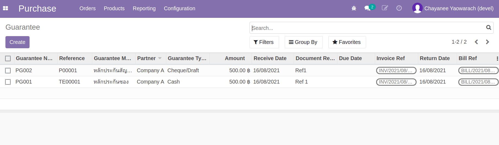
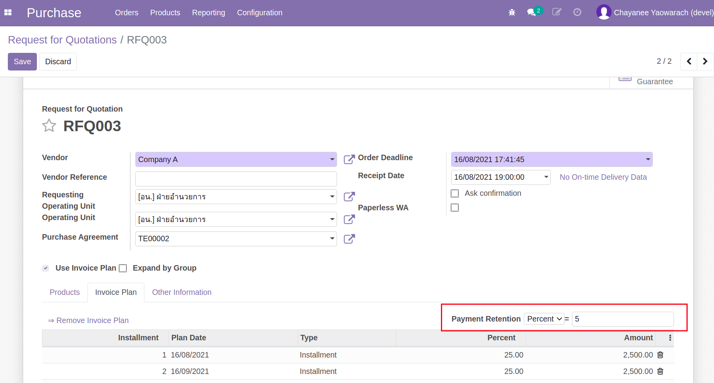
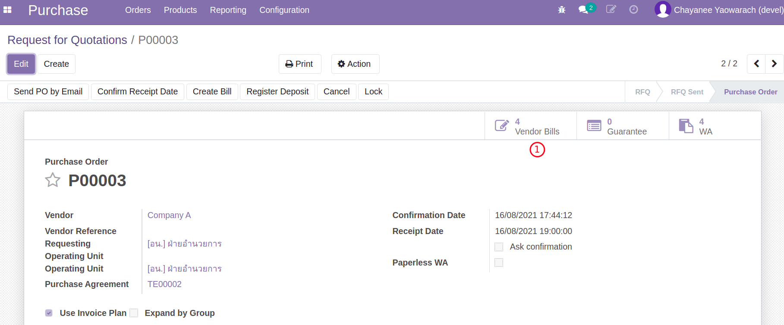
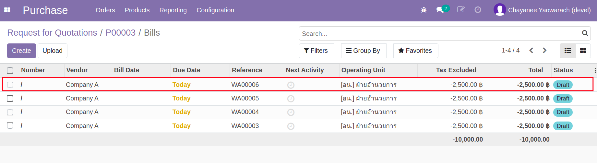
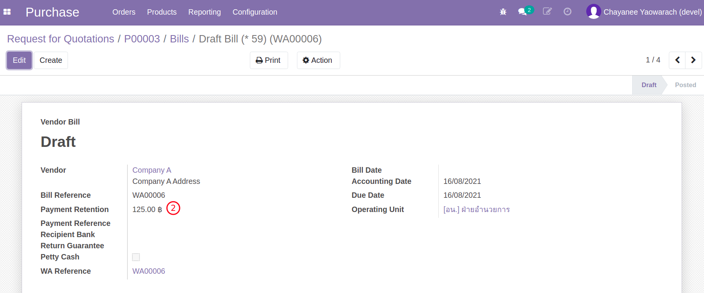
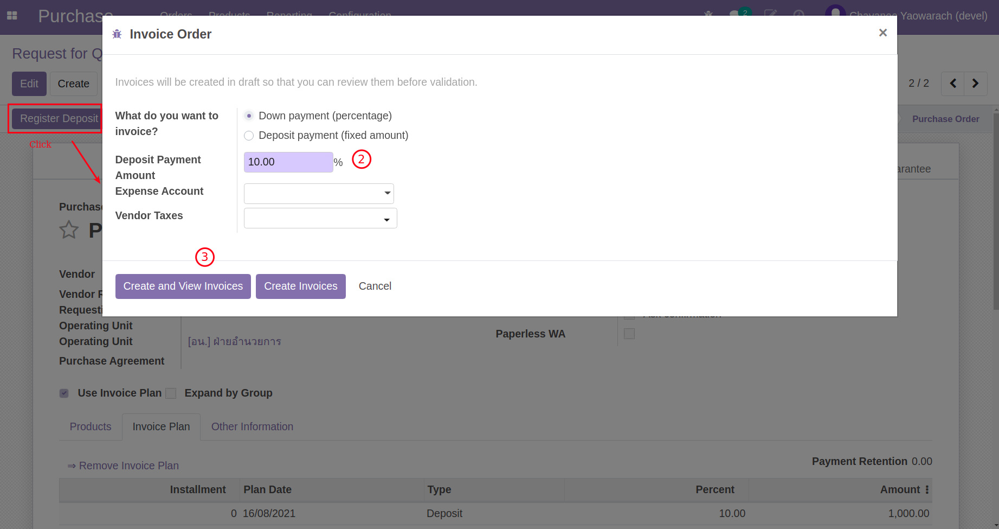

กระบวนการจัดซื้อจัดจ้าง (ส่วนเพิ่ม)#
กระบวนการเพิ่มเติม สำหรับกรณีจัดซื้อจัดจ้างแยกหัวข้อเป็นเรื่องๆ ดังนี้
- กรณีเงินงวด (Invoice Plan Installment)
- การสร้างเอกสารตรวจรับ (WA) กรณีมีเงินงวด (Invoice Plan)
- หลักประกันซอง (TE Guarantee กรณี e-Bidding)
- หลักประกันสัญญา (RFQ Guarantee)
- เงินประกันผลงาน (Retention)
- กรณีเงินงวดแบบมีเงินมัดจำ (Invoice Plan + 1st Deposit)
เอกสารนี้สำหรับ :: เจ้าหน้าที่พัสดุ (Procurement Officer)
กรณีเงินงวด (Invoice Plan Installment)#
เงินงวดหมายถึงการวางแผนการซื้อโดยแบ่งจ่ายเป็นงวดๆ ระบบจะใช้ตาราง Invoice Plan ในการเก็บสัดส่วนการจ่ายในแต่ละงวด
Menu :: Purchase > Orders > Requests for Quotation
Note
- การบันทึกเงินงวด จะบันทึกที่ RFQ ใบเสนอราคาจากผู้ขาย/ผู้ให้บริการที่ได้รับการคัดเลือกสถานะ Draft
- Ref: สร้างใบเสนอราคา RFQ (จาก Purchase Agreement/TE)
-
สร้าง Invoice Plan
- กดปุ่มเพื่อ Edit RFQ, และเลือก Use Invoice Plan เพื่อเปิดการใช้งาน Invoice Plan
- คลิกลิงค์ Create Invoice Plan เพื่อเปิด Wizard
- Number of installment: เลือกจำนวนงวดการแบ่งจ่ายที่ต้องการ
- Installment Date: เลือกวันที่การจ่ายงวดแรก
- Interval: เลือกช่วงเวลาระหว่างงวด (เป็นแค่ตัวช่วย)
- กดปุ่ม Create Invoice Plan เพื่อสร้างตารางการแบ่งจ่าย

-
ปรับรายละเอียดตาราง Invoice Plan
- Installment: แสดงงวดการจ่าย
- Type: ประเภท (Installment/Deposit)
- Percent, Amount: จำนวนเงินในแต่ละงวด

Note
- สามารถแก้ไข เพิ่ม/ลด ตารางได้ตามต้องการในสถานะเอกสาร Draft
- แต่ยอดรวม % ต้องเท่ากับ 100 เสมอ
End.
การสร้างเอกสารตรวจรับ WA กรณีใช้ Invoice Plan#
Menu :: Purchase > Orders > Purchase Orders
Note
- ขั้นตอนนี้สำหรับ Purchase Order ที่อนุมัติแล้ว (Approved) และมีการใช้ Invoice Plan
- การตรวจรับ WA จะถูกบังคับสร้างตามงวดที่วางไว้ที่ Invoice Plan (Create WA by Installment)
-
จาก Purchase Order ทำการสร้างเอกสารตรวจรับ WA
- กดปุ่ม Create WA by Installment ระบบจะเปิด Wizard
- เลือกงวด Installment ที่ต้องการสร้าง WA

- กดปุ่ม Create WA ระบบจะพาไปยังเอกสาร WA ที่สร้างขึ้น
- จะเห็นว่า Quantity บน WA จะเป็นไปตามสัดส่วนของ Installment ที่เลือกโดยอัตโนมัติ

-
ทำการอนุมัติ / ประเมิน / ค่าปรับ เอกสาร WA นี้ตามปกติ
Note
- เอกสาร WA ที่อนุมัติแล้ว จะถูกใช้ในการควบคุมการรับวัสดุ และการสร้างใบแจ้งหนี้ตามปกติต่อไป
End.
หลักประกันซอง (TE Guarantee กรณี e-Bidding)#
Menu :: Purchase > Orders > Purchase Agreements
Note
- กรณี e-Bidding จะมีการวางหลักประกันซองของทุกผู้ที่ยื่นซองประกวดราคา
- เจ้าหน้าที่พัสดุบันทึกหลักประกันซองที่ TE (ข้อ 1)
- การบันทึกหลักประกันซองและการคืนหลักประกันเมื่อประกาศผลการประกวดราคา ดำเนินการโดยการเงินบัญชี
- ที่ TE สร้าง Guarantee ประเภท หลักประกันซอง
- กดปุ่ม "Guarantee"

- กดปุ่ม Create เพื่อสร้าง Guarantee สำหรับ TE นี้

- กรอกรายละเอียดของ Guarantee
 1. Guarantee Number: หมายเลขอ้างอิงของหลักประกัน (ใช้ในการสื่อสารกับฝ่ายบัญชี)
1. Guarantee Number: หมายเลขอ้างอิงของหลักประกัน (ใช้ในการสื่อสารกับฝ่ายบัญชี)
2. Reference: เลขที่เอกสารต้นทาง
3. Guarantee Method: อ้างอิงหลักประกัน ในที่นี้จะเป็นหลักประกันซอง
4. Partner: ชื่อผู้เสนอราคา
5. Guarantee Type: ประเภทของหลักประกัน เช่น เช็ค พันธบัตรรัฐบาลไทย
6. Amount: เงินสำหรับหลักประกัน
7. Guarantee Receive Date: วันที่ได้รับหลักประกัน
8. Document Ref: อ้างอิงเอกสารหลักประกัน
9. Guarantee Due Date: วันที่ครบกำหนดคืนหลักประกัน
10. Invoice Ref: อ้างอิงเลขที่ Customer Invoice
11. Bill Ref: อ้างอิงเลขที่ Vendor Bill
12. Return Date: วันที่คืนหลักประกัน
13. Note: บันทึกรายละเอียดเพิ่มเติมสำหรับหลักประกัน
- กดปุ่ม "Guarantee"
Note
- ในตัวอย่างนี้ไม่ต้องให้ฝ่ายบัญชีดำเนินการเรียกเก็บหลักประกัน เพราะเป็นประเภท Thai Government Bond (แต่ต้องอ้างถึงที่ฟิลด์ Document Ref)
- สรุป Guarantee Type ที่ต้องมีการเรียกเก็บเงิน (Create Invoice ?)

End.
หลักประกันสัญญา (Guarantee ที่ PO)#
Menu :: Purchase > Orders > Purchase Orders
-
จาก RFQ ที่ได้รับคัดเลือก และผ่านการอนุมัติจากผู้อนุมัติ (Status เปลี่ยนเป็น PO) ให้สร้าง Guarantee ประเภทหลักประกันสัญญา
- กดปุ่ม "Guarantee"

- กดปุ่ม Create เพื่อสร้าง Guarantee สำหรับ PO นี้

- กรอกรายละเอียดของ Guarantee
 1. Guarantee Number: หมายเลขอ้างอิงของหลักประกัน (ใช้ในการสื่อสารกับฝ่ายบัญชี)
1. Guarantee Number: หมายเลขอ้างอิงของหลักประกัน (ใช้ในการสื่อสารกับฝ่ายบัญชี)
2. Reference: เลขที่เอกสารต้นทาง
3. Guarantee Method: อ้างอิงหลักประกัน ในที่นี้จะเป็นหลักประกันสัญญา
4. Partner: ชื่อผู้เสนอราคา
5. Guarantee Type: ประเภทของหลักประกัน เช่น เช็ค พันธบัตรรัฐบาลไทย
6. Amount: เงินสำหรับหลักประกัน
7. Guarantee Receive Date: วันที่ได้รับหลักประกัน
8. Document Ref: อ้างอิงเอกสารหลักประกัน
9. Guarantee Due Date: วันที่ครบกำหนดคืนหลักประกัน
10. Invoice Ref: อ้างอิงเลขที่ Customer Invoice
11. Bill Ref: อ้างอิงเลขที่ Vendor Bill
12. Return Date: วันที่คืนหลักประกัน
13. Note: บันทึกรายละเอียดเพิ่มเติมสำหรับหลักประกัน
- กดปุ่ม "Guarantee"
-
การเงินบัญชีบันทึกหลักประกันสัญญา (Customer Invoice -> Payment)

- เมื่อถึงกำหนดการคืนหลักประกัน การเงินบัญชีดำเนินการคืนหลักประกัน (Vendor Bill -> Payment)

- เอกสารหลักประกันทั้งหมด สามารถเรียกดูได้ที่เมนู Purchase > Orders > Guarantee 
End.
เงินประกันผลงาน (Retention)#
Menu :: Purchase > Orders > Requests for Quotation
Note
- เงินประกันผลงาน คือ การหักเงินประกันจากเงินงวดในอัตราร้อยละหรือจำนวนเงินที่เท่าๆ กัน ทุกงวด
- บันทึกอัตราร้อยละหรือจำนวนเงินประกันผลงาน ที่ Invoice Plan เท่านั้น
- เจ้าหน้าที่พัสดุกำหนดอัตราร้อยละหรือจำนวนเงินประกันผลงาน (ข้อ 1) แต่การหักเงินประกันผลงานจะถูกบันทึกโดยฝ่ายบัญชีตอนจ่ายชำระเงินงวดแก่ผู้ขาย/ผู้ให้บริการ
-
กำหนดอัตราการหักเงินแต่ละงวด เป็นอัตราร้อยละหรือจำนวนเงิน เพื่อการประกันผลงาน 
-
ดำเนินการอนุมัติ RFQ ไปจนถึงการตรวจรับวัสดุ WA ในแต่ละงวดตามกระบวนการปกติ
- เมื่อถึงขั้นตอนการออกใบแจ้งหนี้ให้กดปุ่ม Create Bill เลือก WA เพื่อสร้าง Invoice ตามปกติ
- ดูเอกสาร Vendor Bills ที่สร้างขึ้น
- ระบบจะสร้างเอกสารใบแจ้งหนี้ให้ ซึ่งเมื่อคลิกที่ปุ่ม "Vendor Bills" ระบบจะแสดงใบแจ้งหนี้ที่ถูกสร้างตาม WA และ Invoice Plan 
- คลิกเข้าไปดูในแต่ละเอกสารที่สร้างขึ้นจะเห็นว่า มีการหักเงินประกันผลงานไว้ในแต่ละใบแจ้งหนี้  
End.
กรณีคืนเงินประกันผลงาน และต้องวางหลักประกัน#
Menu :: Purchase > Orders > Purchase Orders
- เจ้าหน้าที่บัญชีคืนเงินประกันผลงานที่ Vendor Bills
- เจ้าหน้าที่พัสดุบันทึกหลักประกันผลงาน

- หลังจากหมดภาระผูกพัน เจ้าหน้าที่พัสดุบันทึกข้อมูลการคืนหลักประกันผลงาน
กรณีเงินงวดแบบมีเงินมัดจำ (Invoice Plan + Deposit)#
Menu :: Purchase > Orders > Requests for Quotation
Note
- การบันทึกเงินงวด + เงินมัดจำบน Invoice Plan จะบันทึกที่ RFQ
- Ref: สร้างใบเสนอราคา RFQ (จาก Purchase Agreement/TE)
-
สร้าง Invoice Plan
- กดปุ่มเพื่อ Edit RFQ, และเลือก Use Invoice Plan เพื่อเปิดการใช้งาน Invoice Plan
- คลิกลิงค์ Create Invoice Plan เพื่อเปิด Wizard
- Number of installment: เลือกจำนวนงวดการแบ่งจ่ายที่ต้องการ
- Deposit on 1st Invoice: เลือกเพื่อให้มี Installment ที่ 0 สำหรับ Deposit
- Installment Date: เลือกวันที่การจ่ายงวดแรก
- Interval: เลือกช่วงเวลาระหว่างงวด (เป็นแค่ตัวช่วย)
- กดปุ่ม Create Invoice Plan เพื่อสร้างตารางการแบ่งจ่าย

-
ปรับรายละเอียดตาราง Invoice Plan
- Installment 0 คือ Deposit
- ใส่ Percent หรือ Amount (ซึ่งจะคำนวณกลับเป็น %)
- กดปุ่ม Create Invoice เพื่อสร้าง Deposit Invoice 
Note
- การสร้าง Deposit Invoice จะเป็นใบแจ้งหนี้แรกที่ถูกสร้าง และสามารถทำได้โดยที่ยังไม่มีการตรวจรับ
- ถ้าผู้ใช้พยายามสร้าง Bill อื่นก่อนที่จะสร้าง Deposit Invoice ระบบจะไม่อนุญาต
End.